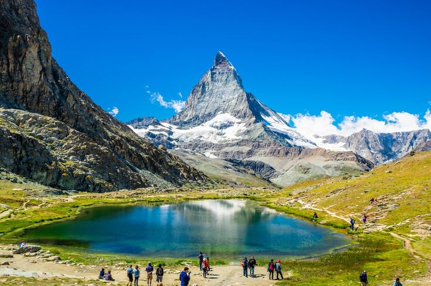
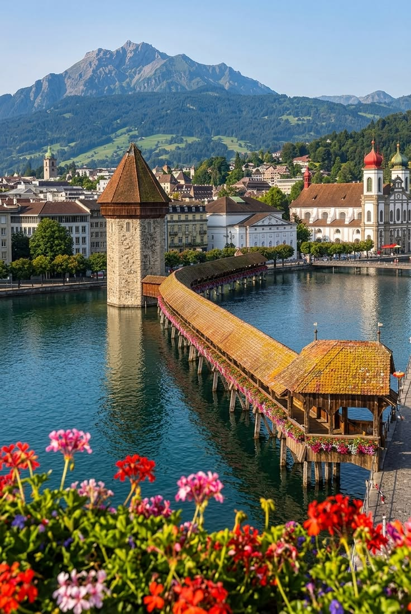
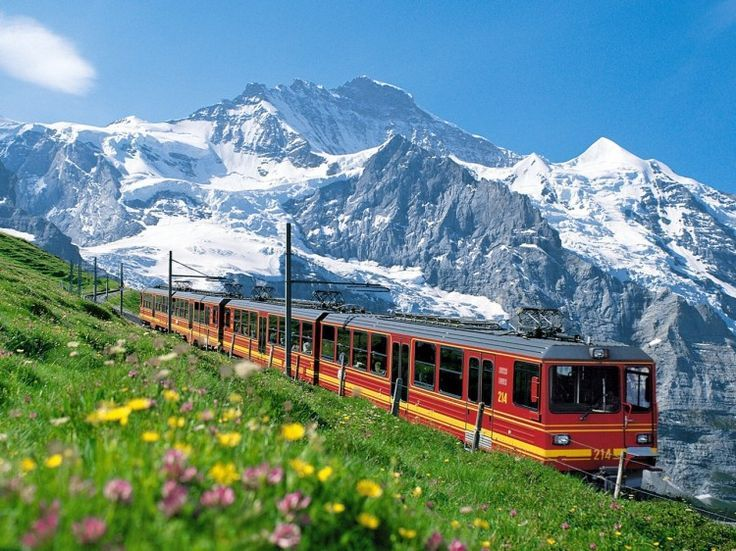
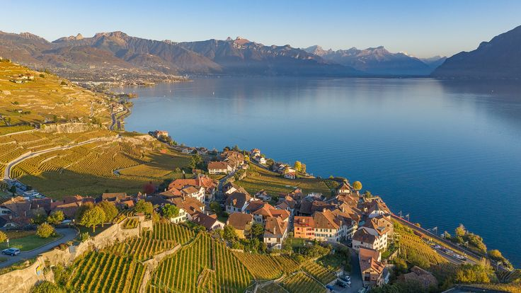
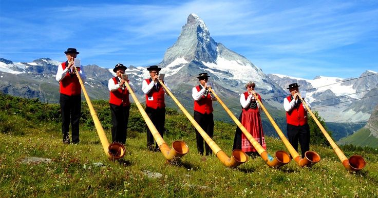
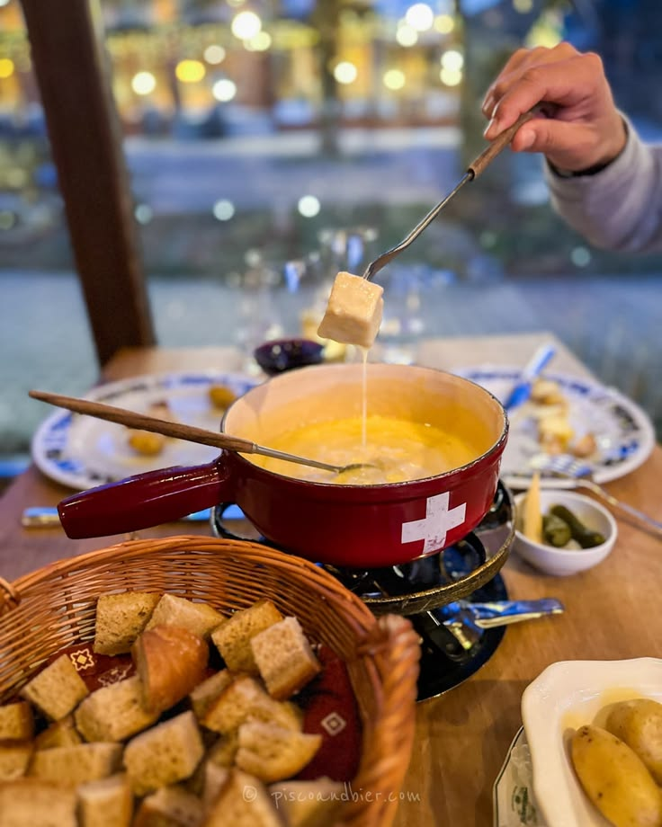
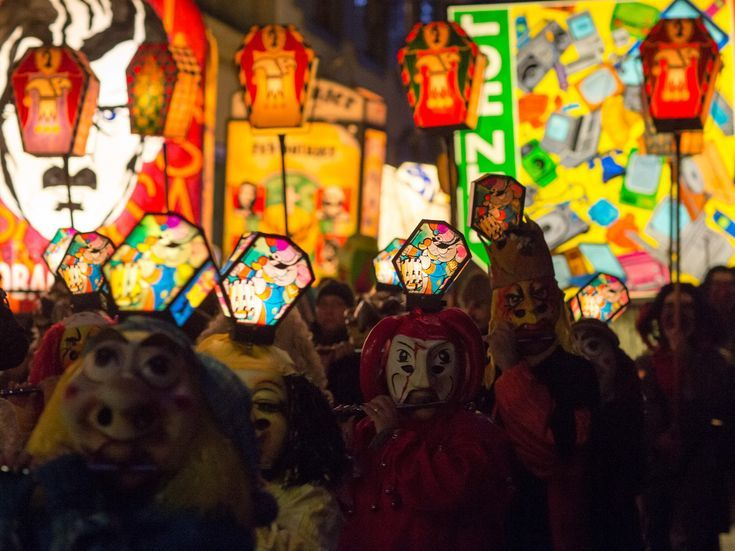
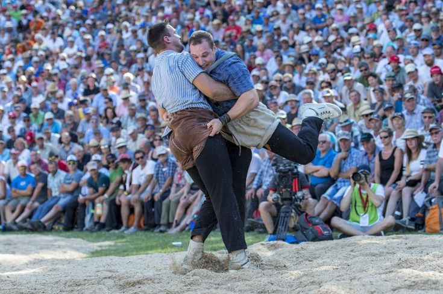

COUNTRY PROFILE
Four languages, one republic
No coastline, no king, and more peaks over 3,000 metres than
most countries have mountains at all. Switzerland runs on 26
self-governing cantons and a habit of putting nearly
everything to a public vote.
26 cantons, each with its own
constitution
4 national languages: German, French,
Italian, Romansh
1291 founding pact of the Swiss
Confederacy
208 peaks above 3,000 metres
A short history
Switzerland has no single head of state in the usual sense
it's run by a seven-member Federal Council that rotates its
presidency each year. Citizens can force a national
referendum on almost any law by gathering enough signatures,
and it happens several times annually.
The country traces back to 1291, when three cantons formed a
defensive pact in the Alps. It stayed out of both World
Wars, and has been militarily neutral since 1815, a
position that made it a natural host for the Red Cross and
the WHO's European headquarters.
Geography still shapes daily life: the Alps cover roughly 60%
of the land, feeding the headwaters of the Rhine, Rhône, and
Inn rivers, while most people and cities sit in the flatter
Mittelland strip between the Alps and the Jura.
- Precision watches: Rooted in the Jura
valleys since the 1500s, after Huguenot refugees arrived
with the craft.
- Chocolate & cheese: Milk chocolate was
refined here in the 1870s; nearly every canton still
defends its own cheese.
- Neutral diplomacy: Unaligned since
1815, hosting treaty talks and international agencies
ever since.
- Mountain railways: A rail network dense
enough to reach villages most countries would only serve
by road.
FIELD NOTES — DESTINATIONS
Where to go
Four places that between them cover the high Alps, the lake
towns, and the terraced wine country south of Geneva.

1. The Matterhorn - Zermatt, Valais · 1,608m
A near perfect pyramid of rock straddling the Italian
border, and one of the most photographed mountains on
earth. Zermatt sits at its base, reachable only by
train, serving as the launch point for cable cars,
glacier skiing, and some of the Alps' most demanding
climbs.

2. Chapel Bridge & the old town - Lucerne, Central
Switzerland
A covered wooden footbridge dating to 1333, painted
inside with panels depicting the city's history. It
leads into a lakeside old town of frescoed guild houses,
where paddle steamers still run scheduled routes across
the water.

3. Jungfraujoch, "Top of Europe" - Bernese Oberland ·
3,454m
A rack railway tunnels through the Eiger and Mönch to
reach the highest railway station in Europe. At the
summit, an ice palace carved into the Aletsch Glacier
and an observation deck open onto a sea of permanent
snow.

4. Lavaux vineyard terraces - Vaud, Lake Geneva · UNESCO
site
Stone-walled vine terraces climb the slope above Lake
Geneva for nearly 30 kilometres, a system of cultivation
dating to the 11th century under Benedictine and
Cistercian monks. Footpaths wind through the rows with
the lake and French Alps as a backdrop.
FIELD NOTES — CULTURE
How it's lived
Four traditions that carry through Swiss daily and festival
life, from alpine herding calls to a national sport judged
on its gentleness.

1. Alphorn playing - Alpine regions
Originally used by herders to call cattle and communicate
across valleys, the alphorn can run up to 3.5 metres
long, with no valves or keys, the player shapes every
pitch with their lips alone. Ensembles now perform at
festivals nationwide, often in traditional dress.

2. Fondue & raclette - Nationwide
Both dishes turn melted cheese into a shared event:
fondue is a communal pot for dipping bread, raclette is
cheese scraped from a half-wheel onto potatoes and
pickles. Each canton defends its own cheese blend and
its own etiquette around the table.

3. Fasnacht carnival - Basel
Basel Fasnacht - The Night the City Glows What happens
when a city turns off every single streetlight, locks
away its everyday face, and lets whimsy rule the night?
That's Basel Fasnacht—a winter carnival you never knew
you needed on your bucket list! On Day 80, Basel comes
alive with surreal lantern parades and mischief-makers
hiding behind dazzling, hand-painted masks. Locals
eagerly trade their identities for a night, letting
satire, jokes, and laughter take over the town.

4. Schwingen, Swiss wrestling - Rural cantons
Two wrestlers grip each other's jute wrestling shorts
over a ring of sawdust, aiming to pin both shoulders to
the ground. The sport still carries a strict code of
sportsmanship the winner traditionally brushes the
sawdust off the loser's back once the match ends.